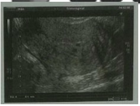

Questão 1 · Fatores de risco · 4000129402A exposição prolongada aos estrogênios sem a oposição dos progestogênios é o principal fator de risco para a hiperplasia endometrial e para o câncer de endométrio. Desconsiderando as situações de uso clínico de estrogênios exógenos, essa situação ocorre mais comumente em duas circunstâncias: _____________ na pré-menopausa e ____________ na pós- menopausa. Assinale a alternativa que preenche, correta e respectivamente, as lacunas do trecho acima.
A obesidade – terapia estroprogestativa
B hiperprolactinemia – obesidade
C síndrome dos ovários policísticos – obesidade
D síndrome dos ovários policísticos – terapia estroprogestativa
Questão 2 · Fatores de risco · 4000123435Que fator de risco, dentre os abaixo, pode ser associado a carcinoma de endométrio tipo I?
A Obesidade
B Terapia hormonal com estrogênio e progestogênio
C Anticoncepcional oral combinado
D Hipertensão arterial
E Tabagismo
Questão 3 · Estadiamento · Tratamento cirúrgico · 4000119941Mulher de 58 anos, G0P0, apresenta sangramento pós-menopausa recorrente há 7 meses. USG-TV: espessura endometrial 16 mm. Biópsia de endométrio à Pipelle: adenocarcinoma de endométrio do tipo endometrioide, bem diferenciado grau I. RNM: envolvimento de menos de 50% do miométrio. A conduta inicial é
A histerectomia total intrafascial e salpingooforectomia bilateral.
B histerectomia total ampliada e linfadenectomia pélvica e paraórtica.
C histerectomia total intrafascial e oomentectomia.
D histerectomia total ampliada e salpingooforectomia bilateral.
Questão 4 · Sarcoma · Miomatose uterina · Diagnóstico dif erencial · 4000115664Em relação aos tumores benignos do útero, é INCORRETO afirmar que:
A O diagnóstico diferencial principal do mioma uterino é com o sarcoma, tumor raro com incidência 3 a 7 por 100.000 mulheres, com mau prognóstico.
B Em caso de suspeita de leiomiossarcoma uterino, a técnica cirúrgica mais indicada é a de morcelamento com o objetivo de assegurar sua completa ressecção.
C O principal tipo de sarcoma, que pode assemelhar-se a um leiomioma, é o leiomiossarcoma, que se apresenta como uma massa miometrial, geralmente associada a sangramento uterino anormal.
D Para se obter bom tratamento cirúrgico de mioma uterino, deve-se levar em consideração outras condições como a relação do tumor com os sinais e sintomas relatados e ainda, com os sinais e sintomas urinários.
Questão 5 · Gastroenterologia · 4000114473A suplementação e reposição enzimática na pancreatite crônica melhoraram a absorção de gorduras quando comparada ao placebo, embora a absorção total não tenha sido alcançada. A quantidade de enzimas necessária para alcançar esses objetivos é variável, devendo ser ajustada conforme a resposta clínica. Não podemos apenas aceitar que:
A A complementação de enzimas melhora, mas não elimina a esteatorreia.
B Inexistem provas conclusivas que a reposição enzimática possa melhorar a dor da pancreatite crônica.
C O tratamento deve ser realizado de forma a diminuir a esteatorreia e contribuir para a manutenção de um estado nutricional adequado.
D Atualmente se recomenda restrição de gorduras na dieta, devido ao risco de agravar deficiências nutricionais.
Questão 6 · Fatores de proteção · Fatores de risco · 4000110897Em relação ao câncer de endométrio, assinale a alternativa correta.
A Anovulação crônica e menarca precoce são fatores protetores.
B Está associado à obesidade e exposição prolongada ao estrogênio.
C Uso de anticoncepcional combinado e multiparidade são fatores de risco.
D Na maioria dos casos são tumores de células escamosas.
E O sangramento vaginal é um sintoma pouco frequente.
Questão 7 · Quadro clínico · 4000106011Geralmente o primeiro sintoma que leva uma paciente com câncer de endométrio a procurar o ginecologista é:
A dor pélvica crônica.
B dismenorreia.
C metrorragia.
D cólica menstrual.
Questão 8 · Quadro clínico · Exames complementares · 4000101090Mulher, 62 anos, procura serviço de urgência muito preocupada pois não menstruava há 10 anos e, há 04 dias vem apresentando sangramento genital. Exame especular sem alterações, verificada saída de sangue pelo OE do colo. Feita ultrassonogra a transvaginal com detecção de útero com volume 85cc com mioma intramural de 03cm, eco endometrial 10mm e ovários atróficos. Seria uma provável causa do sangramento:
A Mioma intramural.
B Atrofia endometrial.
C Endometrite.
D Câncer endometrial.
Questão 9 · Quadro clínico · Exames complementares · Quadro clínico · 4000100788Paciente 58 anos, apresenta queixa de sangramento vaginal. Sua menopausa foi aos 47 anos, quando iniciou a terapia hormonal com estrogênio. Trouxe ultrassonogra a que identi cou útero de volume normal e endométrio de 9 mm. Qual a conduta em relação à terapia hormonal?
A Acrescentar progesterona.
B Aumentar a dose de estrogênio.
C Manter esquema atual.
D Acrescentar androgênios.
E Suspender a terapia hormonal.
Questão 10 · Tratamento · 4000084415Mulher de 45 anos, prole definida, referenciada pelo SISREG para consulta ginecológica com quadro de menorragia e laudo ultrassonográ co de espessamento endometrial. Realizou-se biópsia de endométrio com laudo de hiperplasia endometrial complexa sem atipia. A conduta a ser implementada, diante desse laudo histopatológico, é:
A iniciar progestogênio
B indicar histerectomia vaginal
C indicar histerectomia total abdominal
D iniciar acetato de gosserrelina 10,8 mg
Revisar: possível letra faltando em enunciado
Questão 11 · Exames complementares · 4000084050Paciente com 67 anos, três episódios de sangramento pós-menopáusico, vem à consulta trazendo ultrassonogra a transvaginal com endométrio de 1,8 cm. Qual a conduta indicada a seguir?
A Observar sangramento e repetir ultrassonografia transvaginal em três meses.
B Pan histerectomia.
C Histeroscopia com biópsia de endométrio.
D Histerectomia sem retirada dos anexos uterinos.
Questão 12 · Histeroscopia · Exames complementares · 4000081705Mulher de 60 anos, em amenorreia há 10 anos, realizou um esfregaço cervico-vaginal, que revelou células endometriais anormais. Qual a conduta mais adequada?
A Repetir o esfregaço após 3 meses.
B Realizar uma colposcopia.
C Prescrever reposição estrogênica.
D Realizar uma biópsia de endométrio.
E Tratar e repetir o esfregaço após 6 meses.
Questão 13 · Tratamento · 4000078668RGAL, 49 anos, gesta 3 para 3 partos normais, obesa, hipertensa e com intolerância à glicose apresentou sangramento uterino aumentado e irregular. Ao exame ultrassonográ co apresentava endométrio espessado, 20mm. Foi realizada biópsia endometrial com laudo de hiperplasia atípica simples. Em relação ao caso a melhor conduta será
A controle ultrassonográfico semestral porque a hiperplasia atípica simples só progride para câncer do endométrio em 1% dos casos.
B orientar a paciente ao tratamento com hormonal e controle ultrassonográfico anual porque a hiperplasia simples não é lesão precursora de câncer endometrial.
C histerectomia total abdominal justificada pelo sangramento uterino aumentado e irregular e fatores de risco para o desenvolvimento de câncer de endométrio.
D histerectomia total abdominal, porque a hiperplasia atípica simples em 8% dos casos pode progredir para câncer de endométrio.
E realizar dilatação e curetagem uterina (D&C) porque a hiperplasia atípica simples em 3% dos casos pode progredir para câncer do endométrio.
Revisar: possível letra faltando em enunciado
Questão 14 · Etiologia · Exames complementares · Quadro clínico · 4000062042Uma paciente com 58 anos, G2P2A0, aposentada, chega ao pronto-socorro com sangramento uterino anormal iniciado há um dia. Relata menopausa há três anos, sem uso de TH. A sua última consulta ginecológica foi há três anos, com rotina de exames ginecológicos normais. Diabética e hipertensa, faz uso de hipoglicemiante oral e anti-hipertensivo; porém, de forma irregular. Ao exame clínico, constatou-se bom estado geral; PA: 140X90mmHg; pulso de 88bpm; aparelho cardiovascular: bulhas normofonéticas, ritmo cardíaco regular em 2T, aparelho respiratório: murmúrio vesicular siológico, ausência de ruídos adventícios; abdômen: plano, ácido, sem visceromegalias. Ao exame ginecológico, veri cou-se genitália externa sem alterações e presença de pequena quantidade de sangramento. Considerando o caso descrito, assinale a alternativa que apresenta o procedimento que o médico DEVE realizar na emergência.
A Solicitar ultrassonografia transvaginal e fazer uma curetagem por aspiração para cessar o sangramento.
B Internar a paciente e solicitar o pré-operatório imediatamente.
C Prescrever estrógeno-progestogênio por via oral.
D Solicitar hemograma e ultrassonografia pélvica.
Questão 15 · Histeroscopia · Quadro clínico · Ultrassonograf ia · 4000046545Paciente 38 anos, nuligesta, vem ao PA ginecológico com queixa de sangramento irregular há 6 meses, associado com perda de peso aproximado de 5 kg no período, queixa de fraqueza, cansaço e falta de ar. Ao exame ginecológico, colo sem ectopias, sem sangramento no momento do exame, útero aumentado de volume. Solicitada ultrassonogra a transvaginal, evidenciando útero com volume de 325 cm³ e endométrio de 41 mm com perda de interface entre endométrio e miométrio, hemograma com Hb: 7,8 g/dL e Ht: 23,5%. Diante do caso, a próxima conduta será:
A Histeroscopia com biopsia endometrial.
B Histeroscopia diagnóstica.
C Histerectomia total com biopsia de congelação.
D Histerectomia total + ooforectomia bilateral e esvaziamento ganglionar.
Questão 16 · Fatores de risco · 4000039633Assinale a resposta que melhor corresponde aos fatores de risco para o câncer de endométrio:
A Multiparidade, obesidade, menopausa precoce, terapia de reposição com estrogênio.
B Multiparidade, obesidade, menopausa tardia, terapia de reposição com estrogênio.
C Nulipariedade, obesidade, menopausa tardia, terapia com reposição de estrogênio.
D Nulipariedade, obesidade, menopausa precoce, terapia com reposição de estrogênio.
Questão 17 · Quadro clínico · Fatores de risco · 4000038512Paciente feminina, 65 anos, branca, tabagista, com queixa de sangramento vaginal há 3 meses. AP: obesidade, hipertensa, diabética, hipotireoidismo. Menopausa aos 55 anos. 4G 3P 1A. Considerando esse caso, no que se refere ao carcinoma de endométrio, a tríade clássica é caracterizada por:
A hipertensão , obesidade e tabagismo.
B raça branca, obesidade e diabetes.
C multiparidade, hipertensão e tabagismo.
D diabetes, hipotireoidismo e multiparidade.
E obesidade, hipertensão e diabetes.
Questão 18 · Quadro clínico · Exames complementares · Diagnóstico dif erencial · 4000032241Para o diagnóstico de câncer de endométrio é correto afirmar:
A O exame de Papanicolaou é o mais adequado para diagnóstico precoce.
B 90% das mulheres com carcinoma de endométrio apresentam sangramento anormal ou corrimento vaginal.
C A histeroscopia sempre é a primeira escolha no diagnóstico.
D ultrassonografia indicando endométrio maior que 8mm já fecha o diagnóstico e indica a histerectomia com linfadenectomia.
Questão 19 · Estadiamento · Tratamento cirúrgico · Tratamento adjuvante · 4000024243Mulher de 58 anos realiza biópsia endometrial, que demonstra carcinoma endometrioide bem diferenciado. Em relação a tal situação, julgue os itens a seguir. I. O tratamento necessariamente inclui panhiterectomia. II. Está indicada radioterapia pós- operatória. III. O estadiamento é sempre cirúrgico. Pode se afirmar que:
A apenas o item I está correto.
B apenas o item II está correto.
C apenas os itens I e III estão corretos.
D apenas o item III está correto.
E todos os itens estão corretos.
Questão 20 · Câncer de Endométrio · 4000020543Com relação ao câncer endometrial, assinale a alternativa incorreta:
A Obesidade, síndrome dos ovários policísticos e uso de tamoxifeno são fatores de risco significativos.
B O tratamento da Hiperplasia Endometrial não atípica em mulheres na pré-menopausa deve ser feito com progestogênio de baixa dosagem por um período de 3 a 6 meses.
C Diante do diagnóstico de Hiperplasia Endometrial atípica, a realização de histerectomia se impõe e deverá ser realizada, independente da idade e dos antecedentes reprodutivos da paciente.
D O tipo histológico mais comum de Câncer de Endométrio é o adenocarcinoma endometrioide, que tem por característica apresentar glândulas que se assemelham às do endométrio normal.
E Todas as alternativas anteriores estão corretas.
Questão 21 · Tratamento · 4000012293Mulher, 36 anos de idade, nuligesta com desejo reprodutivo, apresenta sangramento uterino anormal há 3 meses. Foi realizada biópsia do endométrio que mostrou hiperplasia complexa com atipia. O tratamento mais adequado para esta paciente é:
A curetagem uterina
B tratamento contínuo com progestagênio
C tratamento cíclico com estrogênio
D indução da ovulação com GnRH
E histerectomia vaginal
Questão 22 · Histeroscopia · Biópsia ambulatorial · 4000007515O Sangramento genital feminino tem sua importância em todas as fases do ciclo reprodutivo da mulher. Na menopausa, tem sua conotação siológica e patológica. Paciente de 67 anos, menopausada, apresenta sangramento vaginal. Ao ultrassom endovaginal, evidenciou-se espessamento endometrial focal de 18 mm. Neste caso, está indicado(a):
A Histerectomia.
B Histerectomia + ooforectomia pelo risco de câncer de ovário nesta idade.
C Histeroscopia com biópsia.
D Histerossalpingografia.
E Prescrição de Estrogênio e Progesterona.
Questão 23 · Histeroscopia · Diagnóstico dif erencial · Diagnóstico dif erencial · 4000125603Paciente de 65 anos, vem ao consultório referindo 2 episódios de sangramento discreto há um mês. Refere menopausa aos 47 anos, nunca usou Terapia Hormonal. Sem atividade sexual há 10 anos. G3P3(N) A0. Refere último exame ginecológico há 2 anos. Ao exame bom estado geral. IMC: 25. Exame ginecológico: vulva atró ca. Exame especular: vaginite atró ca, colo cilíndrico, orifício externo circular, teste de Schiller: iodo claro. Ao toque útero intra-pélvico em RVF, volume normal. A paciente traz consigo ultrassonografia transvaginal recente que apresenta útero de volume 65 cm³ e endométrio de 9 mm. A melhor conduta diante deste caso será:
A Adotar conduta expectante e repetir ultrassonografia em 6 meses, uma vez que a principal causa de sangramento pós- menopausa, para esta paciente, seria atrofia endometrial.
B Fazer Teste de Progesterona por 14 dias, e apenas no caso do teste ser positivo, realizar biópsia endometrial.
C Realizar Histeroscopia Diagnóstica e biópsia de endométrio, caso necessário, de acordo com o resultado da Histeroscopia.
D Realizar Curetagem Uterina Semiótica, que seria a melhor forma de obtenção de amostragem representativa de tecido endometrial.
E Indicar Histerectomia Total abdominal + salpingectomia bilateral, diante da forte suspeita de câncer de endométrio.
Revisar: possível letra faltando em enunciado
Questão 24 · Diagnóstico dif erencial · Quadro clínico · 4000120228Mulher de 67 anos com queixa de episódios de discreto sangramento via vaginal vermelho vivo, recorrentes há 02 meses, observados principalmente ao urinar. AP: HAS e DM descontrolados, infertilidade por anovulação crônica. AF: pai e irmã com neoplasia intestinal. Exame físico: corada, hidratada, PA 160 x 87 mmHg, IMC 45 kg/m². Os diagnósticos mais prováveis e as condutas mais apropriadas na avaliação inicial são:
A atrofia endometrial/pólipo endometrial; orientação para observação de novos episódios de sangramento e solicitar ultrassonografia transvaginal e histeroscopia diagnóstica.
B displasia cervical/neoplasia de colo uterino; exame físico ginecológico, realização de colposcopia e coleta de citologia oncótica cervical.
C hiperplasia endometrial/neoplasia endometrial; exame físico ginecológico e coleta de biópsia endometrial às cegas.
D hipotireoidismo/infecção urinária; avaliação laboratorial de função tireoideana e realização de urinálise e urocultura.
Questão 25 · Fatores de risco · 4000118421São fatores de risco para câncer endometrióide de endométrio
A uso de DIU hormonal, uso de contraceptivos hormonais, obesidade.
B hipertensão arterial, multiparidade e diabetes mellitus.
C obesidade, hipertensão e tumor de célula granulosa do ovário.
D mutação de BRCA1, multiparidade e uso de contraceptivos.
E terapia hormonal na pós-menopausa, tabagismo, uso de DIU.
Questão 26 · Tratamento cirúrgico · 4000117943Paciente diagnosticada com câncer de endométrio vem para nosso Serviço. Qual a melhor indicação para o tratamento e estadiamento, numa suspeita de lesão restrita ao útero?
A Histerectomia total abdominal + salpingectomia bilateral por laparotomia.
B Histerectomia total abdominal + salpingectomia bilateral por robótica.
C Histerectomia total + anexectomia bilateral por via vaginal.
D Histerectomia total + anexectomia bilateral por via laparoscópica.
E Histerectomia subtotal + salpingo-ooforectomia bilateral por qualquer técnica.
Questão 27 · Fatores de risco · 4000113341São conhecidos vários fatores de risco para o câncer do endométrio: menarca precoce, menopausa tardia, diabetes, ciclos anovulatórios, obesidade, nuliparidade etc. Em relação à obesidade, este risco provavelmente é maior devido
A ao fator genético.
B à conversão periférica da androstenediona, produzida em suprerrenais e ovários, em estrona.
C à elevação exagerada da fração LDL do colesterol.
D ao efeito proliferativo endometrial da lecitina-endometrial.
E à falta de progesterona, comum em obesas, para diminuir a proliferação endometrial.
Questão 28 · Avaliação pré operatória · 4000101395Qual dos seguintes métodos de diagnóstico de imagem produz melhor desempenho diagnóstico para avaliar a invasão miometrial profunda no câncer do endométrio?
A US Transabdominal
B FDG - PET/CT
C Ressonância Magnética
D RX da pélvis
Questão 29 · Quadro clínico · Exames complementares · Quadro clínico · 4000099533Paciente de 62 anos de idade, menopausa aos 50, procura serviço de saúde por achar estranho ter voltado a menstruar, em pequena quantidade, a cada 20 dias, há cerca de 6 meses. O exame clínico geral e genital não revela anomalias. O ultrassom via transvaginal demonstra útero com volume de 220cc com mioma de 2,5cm subseroso, eco endometrial 11mm, ovário direito 3cc e ovário esquerdo 2cc. Seriam a principal hipótese diagnóstica e conduta recomendada para o caso:
A Pólipo endometrial e histerectomia.
B Degeneração do mioma e miomectomia.
C Atrofia endometrial e conduta expectante.
D Hiperplasia ou câncer de endométrio e histeroscopia com biópsia.
Questão 30 · Quadro clínico · Exames complementares · Quadro clínico · 4000095877A conduta no sangramento pós-menopausa com US transvaginal normal é:
A Administração de progestogênios.
B Administração de estrogênios.
C Administração de estrogênio e progestogênio.
D Histerectomia total.
E Histeroscopia.
Questão 31 · Quadro clínico · Exames complementares · Quadro clínico · 4000091622Uma paciente de 57 anos, G2 PN2, apresenta um sangramento vaginal após quatro anos de amenorreia. O exame especular e toque vaginal estão normais. Considerando custo-efetividade, qual o exame inicial indicado?
A Histeroscopia.
B Dilatação e curetagem.
C Citologia de lavado endometrial.
D Biópsia endometrial.
E Histerossonografia.
Questão 32 · Quadro clínico · Exames complementares · Quadro clínico · 4000081428Paciente negra com 53 anos de idade, com hipertensão controlada e intolerância à glicose, mantém controle dietético. Apresenta menstruações irregulares com sangramento abundante nos últimos meses, mantendo uxo por até 15 dias. Ultrassonogra a mostra útero de volume normal, sem nódulos, endométrio medindo 1,3 cm. Diante do quadro, a conduta mais adequada é:
A ácido tranexâmico no perído menstrual
B histeroscopia com biópsia de endométrio
C terapia de reposição hormonal combinada
D progesterona na segunda fase do ciclo menstrual
Questão 33 · Histologia · Classif icação · 4000079403Entre os tipos histológicos de neoplasia endometrial, aquele de pior prognóstico é o:
A adenocarcinoma endometrióide
B carcinoma mucinoso
C carcinoma secretor
D carcinoma seroso
Questão 34 · Histologia · 4000065539O tipo histológico mais comum do câncer de endométrio é o
A carcinoma seroso.
B carcínoma mucinoso.
C adenocarcínoma endometrioide.
D carcinoma misto.
E carcinoma indiferenciado.
Questão 35 · Fatores de risco · 4000061305Assinale a alternativa que apresenta a síndrome genética MAIS comum associada ao carcinoma endometrial.
A Síndrome Li-Fraumeni.
B Câncer colo retal não poliposo hereditário.
C Mutação BRCA1/BRCA2 (síndrome câncer de ovário/mama).
D Síndrome de ovário policístico.
Questão 36 · Prevenção · Quadro clínico · Fatores de proteção · 4000047614O câncer do endométrio tornou-se o câncer ginecológico mais comum em países industrializados, notando-se aumento da sua frequência. Em relação as recomendações gerais para a prevenção, rastreamento e diagnóstico desse tipo de câncer, é CORRETO afirmar que:
A O uso de anticoncepção hormonal aumenta o risco para o câncer do endométrio.
B A espessura endometrial para pacientes na pós menopausa sem terapia hormonal é considerado limite de corte 8mm de espessura.
C A associação de estrogênio e progesterona usados durante a terapia hormonal no climatério é capaz de bloquear os efeitos proliferativos sobre o endométrio.
D A citologia vaginal (Papanicolaou) com células endometriais presentes em mulheres no climatério, não indica necessidade de investigação do endométrio.
E Pacientes em uso de SERMS (Tamoxifeno), que tem ação antagonista no endométrio, não necessitam de investigação.
Questão 37 · Tratamento · 4000038668Paciente C.A.S., 55 anos vem ao ambulatório de ginecologia com queixa de sangramento irregular em pequena intensidade há 3 meses. Relata menopausa aos 48 anos, nega TH (Terapia Hormonal). Paciente GIII, PIII, AO 3PN refere ser diabática e hipertensa em tratamento. Ao exame IMC: 34,5, especular: colo uterino sem ectopias, toque: útero móvel sem aumento de volume, indolor à mobilização. Solicitados exames de rotina, apresenta Ultrassonogra a transvaginal com endométrio de 12 mm. Realizada Histeroscopia com biópsia endometrial apresentando hiperplasia atípica de endométrio. A conduta recomendada é:
A Progestágenos contínuos medroxiprogesterona ou norestisterona.
B SIU (Sistema Intrauterino) liberador de levonorgestrel.
C Histerectomia total minimamente invasiva.
D Histerectomia total com salpingo-oforectomia bilateral e esvaziamento ganglionar.
Questão 38 · Fatores de proteção · Fatores de risco · 4000037294Dos fatores a seguir, assinale o protetor do Adenocarcinoma do Endométrio:
A Baixa paridade.
B Nuliparidade.
C Tabagismo.
D Multiplicidade de parceiros.
E União monogâmica.
Questão 39 · Hiperplasia Endometrial Câncer de endométrio e outros tumores do corpo do útero · 4000032307O câncer de corpo uterino representa a terceira neoplasia mais frequente entre os cânceres ginecológicos, atrás apenas do câncer de mama e colo de útero, de acordo com dados do Instituto Nacional do Câncer - INCA (2018). Sobre tal patologia, assinale a alternativa CORRETA.
A O tratamento cirúrgico padrão do câncer de corpo uterino envolve apenas histerectomia total.
B A maioria dos cânceres de corpo uterino é representado pelo carcinoma endometrioide.
C O diagnóstico de câncer de corpo uterino é realizado geralmente no intraoperatório com biópsia de congelação.
D O uso de contraceptivos hormonais combinados é fator de risco para câncer de endométrio.
Questão 40 · Classif icação · 4000027194Os carcinomas do endométrio são neoplasias malignas considerados:
A O segundo tipo de neoplasias invasoras mais comum encontrado no trato genital feminino.
B Tumores do tipo I - de baixo grau e geralmente indolentes - e os do tipo II - agressivos e de alto grau, com prognóstico desfavorável.
C Tumores precedidos de hiperplasia atípica que apresentam mutações no gene TP53, e que podem, ainda, ser identificados nas lesões precursoras.
D Os carcinomas do tipo II, associados ao carcinoma intraepitelial endometrioide seroso e suas mutações mais encontradas são: a PTEN, a PIK3CA, a KRAS e a ARIDIA.
Questão 41 · Fatores de risco · 4000026611É considerado fator de risco para câncer de endométrio:
A Menarca tardia.
B Multiparidade
C Índice de massa corporal abaixo de 25.
D Terapia estrogênica sem progestágeno.
Questão 42 · Tratamento · 4000025536Mulher de 42 anos, G3, P3, três partos normais, laqueadura há 20 anos, foi submetida a histeroscopia diagnóstica por apresentar sangramento uterino anormal e espessamento endometrial na ultrassonogra a. O resultado do histopatológico mostrou hiperplasia endometrial simples, sem atipias. Diante deste quadro, o tratamento é:
A histerectomia.
B ablação de endométrio.
C progestágeno.
D leuprorrelina.
Questão 43 · Exames complementares · Quadro clínico · Exames complementares · 4000019544Paciente de 70 anos de idade, GI P0 AI, menopausa aos 50 anos, obesa, hipertensa, apresenta sangramento vaginal que iniciou há 2 meses. Nega uso de terapia hormonal. Traz consigo ultrassonogra a transvaginal realizada há 1 mês que evidenciou um endométrio de 10 mm. O exame ginecológico não mostrou lesão em vagina e colo. A propedêutica mais eficaz para a investigação do sangramento é:
A Colpocitologia oncótica.
B Curetagem uterina.
C Histeroscopia.
D Não há necessidade de investigação do sangramento, pois a paciente já realizou a ultrassonografia transvaginal.
Questão 44 · Fatores de risco · 4000018023Julgue o item, relativo à oncologia ginecológica. Entre os fatores de risco para o câncer endometrial estão a idade, a obesidade, a hereditariedade, o uso de contraceptivos hormonais orais combinados e o antecedente de câncer de mama ou intestino.
A Certo.
B Errado.
Questão 45 · Tratamento cirúrgico · 4000006611Mulher, 65 anos de idade, hipertensa, obesa e diabética, refere sangramento vaginal há 7 meses. Identi cou-se espessamento endometrial de 9 mm à ultrassonogra a. O resultado da biópsia do endométrio evidenciou adenocarcinoma endometrioide G1. Qual a conduta a seguir?
A Histerectomia subtotal com salpingooforectomia bilateral e coleta do lavado peritoneal.
B Histerectomia total com salpingectomia bilateral e coleta do lavado peritoneal.
C Histerectomia subtotal com salpingooforectomia bilateral, linfadenectomia pélvica e periaórtica.
D Histerectomia total com salpingectomia bilateral, linfadenectomia pélvica e periaórtica.
E Histerectomia total com salpingooforectomia bilateral e coleta do lavado peritoneal.
Questão 46 · Quadro clínico · Exames complementares · 4000128247Paciente de 61 anos de idade, obesa, em amenorréia há 10 anos, com queixa de sangramento vaginal há 3 meses. Nega uso de tratamento hormonal. História clínica e exames clínicos e ginecológico sem outras anormalidades. Citologia oncótica cervical sem alterações. Ultrassonogra a Transvaginal mostrando eco endometrial com espessura de 14mm. Qual é a conduta MAIS APROPRIADA para essa paciente?
A Colposcopia com biópsia do colo uterino
B Dosagem de FSH, LH e estradiol
C Histeroscopia com biópsia de endométrio
D Iniciar reposição hormonal com estrogênio
Questão 47 · Câncer de Endométrio · 4000121785Com relação ao câncer do endométrio, assinale a alternativa CORRETA.
A O tipo endometrioide em geral tem prognóstico melhor.
B O estadiamento é melhor realizado pela histeroscopia.
C Pelos critérios de Rotterdam, quando o eco endometrial for maior que 5 mm e a paciente tiver sangramento genital, no mínimo, tem-se estádio II da neoplasia.
D Seus principais fatores de risco são: obesidade, hipertensão arterial, tabagismo e uso prévio de anticoncepcional hormonal combinado.
E A tomografia computadorizada deve ser realizada como método de rastreamento em pacientes com obesidade.
Questão 48 · Etiologia · 4000121313Mulher menopausada há 10 anos, sem fazer uso de nenhuma medicação hormonal, apresentou história de que, por três vezes, teve sangramento vaginal no último mês. Procurou o ambulatório de ginecologia. Qual é o diagnóstico mais provável?
A Carcinoma de endométrio.
B Hiperplasia endometrial.
C Atrofia endometrial.
D Pólipo endometrial.
E Discrasia sanguínea.
Questão 49 · Tratamento · 4000117547Uma paciente de 55 anos de idade procurou o ambulatório com queixa de aumento de volume abdominal há seis meses. Nega doenças ou medicações em uso e G1PN1A0. Levou ultrassonogra a realizada há seis meses que demonstrava útero em anteverso exão com a presença de mioma intramural com 6 cm no maior diâmetro. Repetido o exame, constatou-se o aumento do mioma, que passou para 24 cm no maior diâmetro. Realizou-se, então, cirurgia por videolaparoscopia com histerectomia total e salpingo-ooforectomia bilateral para a retirada da peça cirúrgica, sendo necessário o uso de morcelador. O anatomopatológico foi de leiomiossarcoma. Considerando essa situação hipotética, assinale a alternativa CORRETA:
A Sabe-se que esse tumor tem um comportamento benigno, sendo raras as recidivas.
B O uso do morcelador não altera o prognóstico da doença.
C Existe alta associação dessa neoplasia com a síndrome de Lynch.
D A realização do esvaziamento linfonodal é mandatória em todas as pacientes com essediagnóstico.
E A radioterapia diminui as taxas de recidiva local, porém sem impacto na sobrevida.
Questão 50 · Exames complementares · 4000108872Paciente de 57 anos em acompanhamento de menopausa, sem TRH, comparece ao consultório solicitando ultrassom para saber se está tudo bem. No retorno, o valor esperado da espessura endometrial neste caso deve ser:
A Até 5 mm.
B Até 8 mm.
C Até 10 mm.
D Até 15 mm.
Questão 51 · Hormonioterapia · 4000105065Mulher de 52 anos, menopausa aos 48 anos, está em tratamento adjuvante para câncer de mama com tamoxifeno há 4 anos, e durante sua consulta de seguimento queixa-se de 2 episódios de sangramento vaginal em pequena quantidade no último mês. Tem citologia cervical há um ano normal e ultrassonogra a pélvica transvaginal que não identi ca os ovários, com endométrio homogêneo com 11.1mm de espessura (imagem A). Realizou histeroscopia diagnóstica (imagem B) e fez biópsia dirigida. Das alternativas abaixo, qual o diagnóstico mais provável?

A Atrofia cística
B Hiperplasia endometrial
C Pólipo endometrial
D Câncer endometrial
Revisar: possível letra faltando em enunciado
Questão 52 · Quadro clínico · Exames complementares · Quadro clínico · 4000102488Paciente com 59 anos de idade, última menstruação havia sido há 08 anos. Nos últimos 06 meses tem apresentado sangramento genital a cada 20 dias com uxo que vem aumentando de intensidade. É diabética do tipo 2 e hipertensa. Ao exame ginecológico apresentava mamas sem alterações, vulva atró ca, especular de vagina e colo sem lesões com sangue escuro exteriorizando-se pelo OE do colo. Trouxe ultrassonogra a solicitada pelo clínico da UBS que demonstrou volume uterino de 122cc com mioma intramural de 2cm, eco endometrial de 12mm, ovário direito 2cc e ovário esquerdo 3cc. Seria(m) a(s) causa(s) mais provável(is) do sangramento e conduta inicial:
A Atrofia endometrial e expectante
B Mioma e histerectomia
C Hiperplasia ou câncer de endométrio e histeroscopia com biópsia
D Pólipo endometrial e histerectomia
Revisar: possível letra faltando em enunciado
Questão 53 · Tratamento · 4000099720O carcinoma de endométrio in situ e a hiperplasia atípica complexa em pacientes jovens sem prole constituída deve ser tratada por:
A histerectomia subtotal.
B curetagem uterina.
C histeroscopia e DIU de cobre.
D histeroscopia e SIU levonorgestrel.
Questão 54 · Exames complementares · Fatores de risco · 4000088852Sobre o rastreamento populacional (screening) do câncer de endométrio, podemos afirmar:
A É recomendado, usando-se a medida do eco endometrial em mulheres acima dos 50 anos, ou 40 anos naquelas com fatores de risco.
B Deve ser realizado através do teste da progesterona, em mulheres com mais de um ano de menopausa.
C É feito através da histeroscopia com biópsia.
D É recomendado apenas nos países desenvolvidos.
E Não tem boa relação custo-benefício.
Questão 55 · Histeroscopia · Quadro clínico · Quadro clínico · 4000080120Mulher com 56 anos, menopausa há 8 anos, apresentou episódios de sangramento vaginal nos últimos dois meses. Não faz uso de medicação hormonal e últimos dois exames preventivos do colo uterino são normais. Ultra-sonogra a transvaginal mostra útero com volume normal e eco endometrial espessado de 8 mm (normal até 4 mm). A conduta indicada é:
A Iniciar terapia hormonal estroprogestativa.
B Expectante e repetir ultra-sonografia em 2 meses.
C Solicitar histeroscopia com biópsia dirigida.
D Encaminhar para realização de histerectomia.
Questão 56 · Estadiamento · Fatores de risco · Classif icação · 4000074443Em relação ao carcinoma do endométrio, qual das afirmativas, a seguir, está correta?
A A maior mortalidade pelo câncer do endométrio se deve aos carcinomas de células claras e seroso.
B O estadiamento adequado do carcinoma de endométrio é feito por exame físico e propedêutica complementar por imagem.
C A terapia hormonal com estrogênio, associado à progesterona, aumenta o risco de desenvolvimento do carcinoma do endométrio.
D O carcinoma do endométrio Tipo II está diretamente relacionado ao estímulo estrogênico.
Questão 57 · Classif icação · 4000053656As histologias no câncer de endométrio são divididas em dois grandes grupos, devido ao seu comportamento patológico muito distinto. O primeiro deles são os tumores ditos endometrióides. Assinale a alternativa que corresponde ao outro grupo, cujo comportamento biológico se assemelha aos tumores epiteliais de ovário.
A Tumores metaplásicos.
B Sarcomas.
C Serosos papilíferos e de células claras.
D Tumores apócrinos.
E Tumores de Brenner.
Questão 58 · Quadro clínico · Exames complementares · Quadro clínico · 4000039455Paciente, 52 anos, nuligesta, obesa, com menopausa há 5 anos em uso de terapia hormonal desde então, procurou a Unidade Básica de Saúde devido a sangramento vaginal em pequena quantidade, esporádico, com início havia 2 meses. O exame físico ginecológico não revelou alterações. A ultrassonogra a pélvica evidenciou endométrio de 16 mm (referência menor ou igual a 5 mm para pacientes sem uso de terapia hormonal). Qual é o próximo exame a ser realizado para estabelecer o diagnóstico?
A Antígeno carcinoembrionário (CA 125)
B Exame histológico de esfregaço endocervical
C Tomografia computadorizada de pelve
D Biópsia endometrial
Questão 59 · Fatores de risco · 4000023864São fatores de risco para o câncer de endométrio:
A anticoncepcional com DIU contendo levonogestrel e multiparidade.
B análogos de GnRH e prolactina.
C acetato de medroxiprogesterona e nuliparidade.
D TH com estrogênio sem progestagênio em paciente com útero e nuliparidade.
Questão 60 · Exames complementares · Exames complementares · 4000007566Paciente de 54 anos, menopausa há 17 meses, tem queixa de corrimento vaginal serossanguinolento há um mês. O exame ginecológico revela atro a genital, com petéquias na vagina. O laudo citopatológico de esfregaço cervical é: "In amatório acentuado com atrofia; presença de células endometriais". Está indicado:
A Solicitar cultura de secreção vaginal para tratar processo inflamatório.
B Reavaliar atrofia genital e processo inflamatório após tratamento.
C Investigar cavidade uterina.
D Avaliar menopausa com dosagens hormonais.
Questão 61 · Quadro clínico · Exames complementares · 4000007553Considerando que a ecogra a endovaginal após a menopausa tornou-se importante instrumento para a detecção do carcinoma do endométrio e do ovário, julgue os seguintes itens. I. Havendo espessura endometrial de 20 mm, o exame é considerado normal para mulheres com até 60 anos de idade. II. Havendo espessura endometrial de menos de 4 mm, o quadro é sugestivo de endométrio senil normal. III. O endométrio de espessura aumentada, com dimensões irregulares e sangramentos, está muito associado a câncer. Está(ão) CORRETO(S) apenas o(s) item(ns):
A I.
B II.
C I e II.
D II e III.
Questão 62 · Exames complementares · 4000116345Em relação à histeroscopia, é correto afirmar:
A histeroscopia ambulatorial é indicada para a cauterização de focos de endometriose na serosa do útero.
B no sangramento da pós-menopausa, ao se realizar a histeroscopia diagnóstica, é comum encontrar endométrio atrófico.
C a histeroscopia é o padrão ouro para avaliação da cavidade uterina, diagnosticando malformações uterinas, pólipos e miomas subserosos.
D o meio de distensão preferencial na histeroscopia cirúrgica é o gás carbônico.
E o ressectoscópio na histeroscopia cirúrgica permite a exérese de pólipos, focos de adenomiose e miomas com manto miometrial externo zero.
Questão 63 · Hiperplasia Endometrial · 4000092828Em relação à evolução e ao tratamento da hiperplasia endometrial, afirma-se: I. A HE complexa sem atipia traz maior risco de evolução ao câncer do que a HE simples com atipia; II. A hiperplasia atípica está associada tanto a um risco de evolução para o carcinoma de endométrio quanto à presença concomitante deste câncer; III. Diante de HE, o tratamento de escolha necessariamente começará pelo uso de baixas doses de progesterona. Está/estão CORRETA (S) a (s) afirmativa (s):
A I, apenas.
B II, apenas.
C III, apenas.
D II e III, apenas.
E I, II e III.
Questão 64 · Prognóstico · 4000086530Mulher na pós-menopausa apresenta diagnóstico de câncer de endométrio. A variável de prognóstico mais importante para sobrevida dessa paciente é:
A Estágio da doença.
B Idade.
C Status dos receptores hormonais.
D Invasão do espaço vascular linfático.
Questão 65 · Prognóstico · 4000086416Paciente de 49 anos, Índice de Massa Corporal (IMC) = 38 kg/m², apresenta menometrorragia. Histeroscopia evidencia endométrio espessado com aumento da vascularização e presença de vasos atípicos. Realizada biópsia dirigida com laudo de carcinoma endometrioide, grau histológico III. Dentre as variáveis de prognóstico adverso, a mais importante neste caso é:
A Obesidade mórbida.
B Hipervascularização.
C Vascularização atípica.
D Grau histológico.
Questão 66 · Histeroscopia · Exames complementares · Ultrassonograf ia · 4000069366A conduta no sangramento pós-menopausa com ultrassonografia pélvica normal é:
A administração de progestogênio.
B administração de estrogênio.
C administração de estrogênio e progestogênio.
D histeroscopia com biópsia endometrial.
Questão 67 · Câncer de Endométrio · 4000063111Paciente de 62 anos, divorciada, branca, aposentada. Veio à consulta especializada por ter apresentado corrimento sanguinolento irregular há 6 meses. G2 C2, última menstruação há oito anos. Não usou terapia hormonal. No exame físico: IMC = 24 kg/m², normotensa. Exame ginecológico: mucosa vaginal atró ca e lisa. Mostrou laudo de ultrassom transvaginal que fez quando teve o corrimento sanguinolento. À época, o endométrio era de 7 mm e o resultado anatomopatológico de uma biópsia guiada por histeroscopia diagnosticou carcinoma seroso de grau histológico 3. Sobre esse câncer, é CORRETO afirmar:
A A inserção de SIU de levonorgestrel é a conduta adequada.
B O fator precursor é a hiperplasia endometrial.
C Apresenta maior agressividade em relação a adenocarcinoma endometrioide.
D O prognóstico é melhor em relação aos tumores estrogênio-dependentes.
E As alterações genéticas moleculares comuns são oncogene K-ras.
Revisar: possível letra faltando em enunciado
Questão 68 · Quadro clínico · Exames complementares · Quadro clínico · 4000044220Paciente com 53 anos, hipertensão controlada e intolerância a glicose, apresenta menstruações irregulares com sangramento abundante no último período, mantendo-se com menor uxo por 15 dias. Ultrassonogra a mostrou endométrio de 13 mm. Nesse caso, a conduta mais adequada é:
A Histeroscopia e biópsia de endométrio.
B Progestágeno cíclico.
C Controle clínico.
D Injetável trimestral.
E Curetagem uterina + Diu de progesterona.
Questão 69 · Histeroscopia · Quadro clínico · Quadro clínico · 4000038305Mulher de 56 anos, em uso de terapia hormonal combinada contínua há 6 anos, vem apresentando há 4 meses sangramento vaginal esporádico discreto. No exame ultrassonográ co, observa-se endométrio de 8 mm e miométrio homogêneo com simetria muscular. A conduta a ser tomada é:
A Realizar histeroscopia para estudo endometrial.
B Aumentar a dose de progesterona.
C Suspender a terapia hormonal e iniciar fitormônios.
D Histerectomia total.
Revisar: possível letra faltando em enunciado
Questão 70 · Quadro clínico · Fisiopatologia · 4000032650Em relação ao câncer de endométrio, assinale a alternativa ERRADA:
A A maioria das pacientes com câncer de endométrio tem sangramento uterino anormal quando a neoplasia ainda está limitada ao útero.
B As mulheres com síndrome de Lynch têm baixo risco de desenvolver câncer de endométrio e/ou de cólon.
C Está comprovado que o estrogênio tem papel no seu desenvolvimento.
D O risco de câncer de endométrio é cerca de três vezes maior em mulheres que estão com 9,5 a 22,5 kg acima de seu peso adequado.
Questão 71 · Quadro clínico · Exames complementares · Quadro clínico · 4000009141Paciente feminina, 65 anos, menopausa aos 52 anos, diabética e obesa, realizou ultrassonogra a transvaginal de rotina que mostrou: útero de volume normal, endométrio de 10 mm, ovários atró cos. Teve episódio de sangramento vaginal há alguns meses. Sem outras queixas. Qual a melhor conduta?
A Repetir ultrassonografia transvaginal em 6 meses.
B Encaminhar para histerectomia total com biópsia de congelação.
C Realizar vídeo-histeroscopia com biópsia endometrial dirigida.
D Indicar ablação endometrial diagnóstica e possivelmente terapêutica.
Revisar: possível letra faltando em enunciado
Questão 72 · Histeroscopia · 4000007356Paciente de 65 anos iniciou com sangramento vaginal, nega terapia hormonal. Uma das possíveis hipóteses diagnósticas é o Câncer de Endométrio. Qual o método padrão-ouro para realização do diagnóstico?
A Ultrassom Endovaginal.
B Ressonância Magnética de Pelve.
C Biópsia com cânula de Pipelle.
D Cureta de Novak.
E Histeroscopia com Biópsia.
Questão 73 · Sarcoma · 4000007243Mulher de 68 anos de idade relata dor em região pélvica e episódios de sangramento vaginal em pequena quantidade há 3 meses. É nuligesta e refere ter feito miomectomia aos 36 anos de idade. Traz exame ultrassonográ co do ano anterior mostrando útero discretamente aumentado com nódulo hipoecóico intramural de 4 cm e ovários normais. O exame abdominal mostra massa endurecida e pouco móvel que atinge 5 cm acima da pube. No toque vaginal, ao se mobilizar a massa, o colo uterino também se move. Não é possível identi car os anexos. A ultrassonogra a mostra volumoso tumor pélvico hipoecóico com 20 cm sem plano de clivagem com o útero. Eco endometrial 3 mm. Ovários não identi cados. O PROVÁVEL diagnóstico é:
A Tumor sólido de ovário.
B Adenomiose.
C Leiomioma com degeneração cística.
D Sarcoma uterino.
E Adenocarcinoma endometrial.
Revisar: possível letra faltando em enunciado
Questão 74 · Histologia · 4000114892Paciente de 61 anos, com menopausa aos 52, foi diagnosticada com câncer do endométrio e submetida a tratamento cirúrgico. O exame anatomopatológico revelou adenocarcinoma endometrioide do tipo G1. Diante desse diagnóstico, assinale a alternativa CORRETA:
A Trata-se de tumor de prognóstico muito ruim e a paciente deve, obrigatoriamente, fazer quimioterapia e radioterapia complementar.
B Trata-se de tumor com prognóstico melhor que o de células claras.
C O prognóstico é semelhante ao carcinoma escamoso.
D É o tumor típico de mulheres na pré-menopausa e seu achado nesta faixa etária piora o prognóstico.
E Como é do tipo G1, o crescimento sólido é de mais de 50%.
Questão 75 · Tratamento · 4000110157Paciente de 62 anos, nuligesta, sem comorbidades, comparece ao serviço de saúde com sangramento vaginal moderado e é submetida à curetagem uterina. Retorna duas semanas após com remissão completa dos sintomas e com o resultado do anátomopatológico mostrando hiperplasia endometrial complexa com atipias. A conduta neste momento deve ser:
A Indicar histeroscopia cirúrgica para garantir que todo o endométrio seja removido.
B Indicar o uso de hormonioterapia com progestagênios para evitar a recorrência da lesão.
C Manter observação clínica, visto que a lesão foi tratada pela curetagem uterina.
D Indicar histerectomia total em função do risco de malignidade associada.
Questão 76 · Tratamento · 4000077807Mulher de 45 anos apresenta quadro de hemorragia uterina anormal. Exame físico: normal, somente evidenciando sangramento uindo do colo uterino. Foi solicitado ultrassonogra a que visualizou endométrio espessado de 14 mm. Após histeroscopia com biópsia, foi diagnosticado hiperplasia adenomatosa sem atipia. O tratamento mais adequado é:
A Estrogênios conjugados equinos.
B Dispositivo intrauterino com levonorgestrel.
C Dispositivo intrauterino com cobre
D Estrogênios naturais (17-beta estradiol).
Questão 77 · Seguimento · 4000077763O marcador sérico que pode estar aumentado no carcinoma endometrioide avançado ou metastático é:
A CA-19.9
B CA-27.29.
C CA-125.
D CEA.
Questão 78 · Quadro clínico · Exames complementares · Quadro clínico · 4000077379Mulher, 61 anos, nuligesta, menopausa há 5 anos, apresenta queixa de sangramento intermitente em borra de café. Exame físico normal. O médico realiza colpocitologia oncótica e analisa a ultrassonogra a trazida pela paciente e reproduzida ao lado (VER IMAGEM). Para essa paciente, a conduta adequada é:

A Indicar vídeo-histeroscopia.
B Reavaliar a partir de outra ultrassonografia com 1 ano.
C Realizar vídeo-colposcopia.
D Solicitar ressonância magnética pélvica.
Questão 79 · Hiperplasia Endometrial Câncer de endométrio e outros tumores do corpo do útero · 4000059227Com relação ao câncer uterino é correto afirmar:
A A infecção pelo papiloma vírus humano (HPV) também é causa do câncer de endométrio.
B A minoria das pacientes com câncer endometrial necessita ser submetida a estadiamento cirúrgico.
C O câncer endometrial acomete igualmente mulheres no menacme e na pós- menopausa e sua virulência aumenta com a idade.
D A sobrevida geral do câncer de endométrio em cinco anos é aproximadamente 30%.
E Em geral, os sarcomas uterinos formam o grupo mais maligno de tumores uterinos.
Questão 80 · Tratamento · 4000017192Paciente de 50 anos, G3P3A0, sem comorbidades, há 6 meses apresenta irregularidade menstrual com intervalos de 60 a 90 dias e episódios de sangramento transvaginal de grande monta com coágulos. Ao exame, apresenta-se estável hemodinamicamente, exame ginecológico sem alterações. Trouxe resultado de exame anatomopatológico de curetagem semiótica realizada há um mês cujo laudo foi compatível com hiperplasia endometrial com atipias. Sobre o melhor tratamento a ser tomado, assinale a assertiva correta.
A Histerectomia abdominal total.
B Histerectomia laparoscópica supracervical com extração uterina por mocelamento.
C Terapia de baixa dosagem de progestogênio cíclico por via oral por três a seis meses e biópsia endometrial ambulatorial anualmente.
D Terapia com alta dosagem de progestogênio oral diários contínuo por três a seis meses e biópsia endometrial ambulatorial semestralmente.
Questão 81 · Câncer de Endométrio · 4000014703Mulher, 60 anos, tabagista, obesa e diabética, procurou serviço médico devido a quadro de sangramento vaginal pós- menopausa, motivo pelo qual foi realizada histeroscopia diagnóstica com biópsia de endométrio. O resultado desta foi adenocarcinoma do tipo endometrioide. Sobre o caso acima, assinale a alternativa CORRETA:
A O tipo de câncer diagnosticado é forma rara, sendo a mais prevalente em endométrioo adenocarcinoma de células claras.
B Uma característica marcante do tumor endometrioide é a presença da expressão degrande quantidade de p53.
C São fatores de risco clássicos para o câncer citado: o tabagismo, a obesidade e odiabetes.
D O uso do marcador CA-125 pode ser utilizado para avaliação da extensão desse tumor.
E Menos de 70% das mulheres apresentam como manifestação inicial do câncer de endométrio o sangramento pós-menopausa e/ou a presença de corrimento purulento.
Questão 82 · Tratamento cirúrgico · 4000009461Durante um procedimento de histerectomia total abdominal em paciente de 50 anos de idade, o laudo da biópsia de congelação foi conclusivo para adenocarcinoma endometrial com invasão miometrial menor do que 50%, sem comprometer colo uterino. Qual o tempo cirúrgico complementar imprescindível, nesse caso?
A Linfadenectomia retroperitoneal.
B Omentectomia infracólica.
C Salpingooforectomia bilateral.
D Linfadenectomia pélvica.
E Colpectomia proximal.
Questão 83 · Fatores de risco · 4000095463Assinale a alternativa em que todos os fatores relacionam-se ao risco de carcinoma de endométrio.
A Múltiplos parceiros, obesidade, menopausa tardia.
B Terapia estrogênia isolada, diabetes, anovulação crônica.
C Abortamentos de repetição com curetagem, multiparidade e SOP.
D Menopausa precoce, altas doses de tamoxifeno, multiparidade.
Questão 84 · Sarcoma · Classif icação · 4000093592Os sarcomas uterinos: I - Em geral, são tumores agressivos, recidivantes e preferencialmente dão metástases via hematogênica, sendo a mais comum para os pulmões; II - Mulheres com câncer endometrial Tipo I, fenotipicamente são obesas, com história de ciclos anovulatórios e geralmente apresentam tumores moderada ou bem diferenciados; III - O tratamento principal e inicial dos sarcomas uterinos é a cirurgia. Nas assertivas acima está correta:
A Apenas a assertiva I.
B As assertivas I e II.
C As assertivas I e III.
D As assertivas II e III.
E As assertivas I, II e III.
Questão 85 · Estadiamento · Tratamento cirúrgico · 4000062588Paciente de 30 anos, com história de infertilidade, nuligesta, expõe história crônica de oligomenorréia e amenorreia. A ultrassonogra a identi cou alterações anormais nos ecos estruturais do endométrio. Realizado biopsia do endométrio com diagnostico histopatológico de adenocarcinoma endométrio Grau I. Foi realizado ressonância magnética Nuclear indicando que o câncer está isolado no corpo do útero. A paciente deseja muito ter lhos, com possibilidade pelo pro ssional de reprodução assistida. Considerando o diagnóstico e vontade da paciente, qual das alternativas abaixo é possivel:
A Terapia com ablação endometrial.
B Terapia com histerectomia tipo 1.
C Terapia com quimioterapia.
D Terapia com anticoncepcional oral combinado.
E Terapia com progestagênio.
Questão 86 · Histeroscopia · Quadro clínico · Quadro clínico · 4000037968Paciente 62 anos, diabética, hipertensa, menopausada há 15 anos em uso de terapia hormonal combinada, apresentou sangramento vaginal por 40 dias contínuos e algomenorreia, sem repercussão hemodinâmica. Após investigação propedêutica ultrassonográfica, detectou-se endométrio medindo 10 mm de espessura. Qual a conduta mais adequada?
A Ablação endometrial.
B Tratamento somente com progesterona.
C Histerectomia total abdominal.
D Histeroscopia diagnóstica.
Questão 87 · Exames complementares · 4000012257Mulher de 59 anos de idade, menopausada aos 52 anos (SIC), vem em busca de orientações sobre como “prevenir” câncer do útero, sua irmã, de 50 anos, teve recentemente o diagnóstico de câncer de endométrio. Nega sangramento, é obesa e diabética controlada. Traz US transvaginal que mostra miométrio heterogêneo e eco endometrial homogêneo de 7 mm. O método definitivo para o diagnóstico do CA de endométrio nesse caso é:
A Curetagem uterina fracionada.
B Biopsia endometrial guiada por vídeo-histeroscopia.
C Biopsia endometrial ambulatorial com cureta de Novak.
D Biopsia endometrial ambulatorial por aspiração manual intrauterina.
Questão 88 · Histeroscopia · Quadro clínico · Quadro clínico · 4000042603Paciente de 67 anos, com antecedente de Menopausa aos 55 anos, 3 gestações com 3 partos normais, Diabetes tipo 2 de 6 anos de evolução, tratamento com Nifedipino para Hipertensão Arterial. Consulta por um quadro de Metrorragia escassa intermitente de 2 meses de evolução. Durante a exploração ginecológica: genitais externos sem lesões, um colo uterino de aspecto atró co, um útero e anexos normais à palpação e um estudo Citológico de Colo normal. Em estudo ecográ co transvaginal se aprecia um endométrio hiperecogênico de 7 mm. Qual dos seguintes exames é mais indicado e com maior sensibilidade para estabelecer o diagnóstico? Respostas: 1 12 23 34 45 56 67 78
A Conização do colo do útero (biópsia em Cone).
B Citologia endometrial.
C Histeroscopia e biópsia de endométrio.
D Ressonância nuclear magnética da pelve.
E Exploração do aparato genital sob anestesia e biopsia do colo e endométrio.
Revisar: possível letra faltando em enunciado